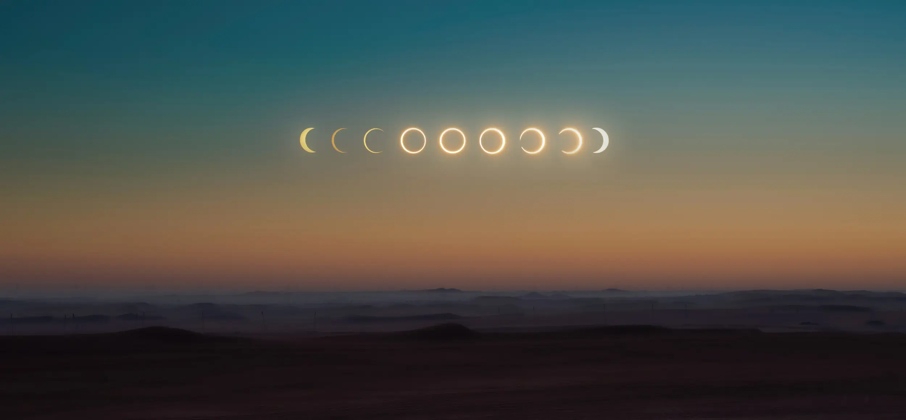

Learn about Eclipses
Solar Eclipse
This is a solar eclipse which means the earth is in between the sun and the moon
As you can see, the reason why not everyone can see it...
How does a solar eclipse occur?
A solar eclipse happens when the Moon passes between the Earth and the Sun, aligning perfectly during a new moon phase. The Moon casts two shadows: the penumbra and the umbra. When an observer is within the umbra's path, they witness a total solar eclipse, with the Moon completely covering the Sun, causing a temporary darkness. In the penumbral region, a partial solar eclipse occurs, where the Moon partially obscures the Sun, creating a crescent shape. An annular eclipse occurs when the Moon is at its farthest point from Earth, appearing smaller and leaving a ring-like appearance. Always use proper eye protection when viewing a solar eclipse.
Why do only some people see it?
Only some people see a solar eclipse because it's a localized event. A total solar eclipse is visible along a narrow "path of totality," which varies with each eclipse. This path passes over specific regions while leaving others outside it. The eclipse's timing is crucial, occurring when the Earth, Moon, and Sun align during daylight hours. Consequently, if it's nighttime in your location or you're not in the path of totality, you won't see a total eclipse. Partial eclipses are more common but still require the Moon to partially cover the Sun, making them visible from specific areas during the event.
How often do these types of eclipses occur?
Total solar eclipses occur about every 18 months somewhere on Earth but are rare for any single location, happening roughly once every few centuries. Partial eclipses are more frequent, occurring several times a year worldwide. The exact frequency depends on your geographical location. Annular eclipses, with a ring-like appearance, are less common, happening approximately every 1-2 years somewhere on Earth. Solar eclipses are cyclical due to the Moon's orbit, but their occurrence varies widely based on your location, making them a relatively infrequent celestial event in any given place. Observers often travel to specific locations to witness total eclipses.
lunar Eclipse
This is a lunar eclipse which means the moon is in between the sun and the earth
As you can see, the reason why not everyone can see it...
How does a lunar eclipse occur?
A lunar eclipse occurs when the Earth passes between the Sun and the Moon, casting its shadow on the Moon's surface. This happens during a full moon when the three celestial bodies align. Earth's shadow has two parts: the penumbra (partial shadow) and the umbra (full shadow). The Moon can partially or completely enter these shadows, resulting in various types of lunar eclipses.
Why do only some people see it?
Not everyone can see lunar eclipses because they are visible from the nighttime side of Earth during a full moon. The Earth's shadow only covers the Moon when the Sun, Earth, and Moon are precisely aligned. Thus, whether you can see a lunar eclipse depends on your location and the timing of the event.
How often do these types of eclipses occur?
Lunar eclipses happen roughly twice a year on average. However, they're not visible from every location during each event. The frequency of seeing lunar eclipses depends on your geographical location and the alignment of the Earth, Moon, and Sun during full moons.
FAQ
What causes the Sun, Moon, and Earth to align?

The alignment of the Sun, Moon, and Earth occurs due to the relative positions and motions of these celestial bodies. It happens during specific lunar phases. A solar eclipse occurs when the Moon is positioned between the Earth and Sun during a new moon. A lunar eclipse happens when the Earth comes between the Sun and Moon during a full moon. These alignments result from the orbital paths of the Moon and Earth, creating opportunities for eclipses to occur.
What is an eclipse season and why do they occur approximately every six months (or twice a year)?
An eclipse season is a period when solar and lunar eclipses become more likely, occurring approximately every six months. This happens because the Moon's orbit is tilted relative to Earth's orbit around the Sun. During eclipse seasons, the Moon crosses Earth's orbital plane (the ecliptic), allowing alignments where the Sun, Earth, and Moon can create eclipses. These seasons occur in pairs, about 5.5 months apart, due to the repeating geometry of the Moon's orbit.
How do scientists know when and where eclipses will occur?
Scientists predict eclipses using precise mathematical models. They track the Moon's orbit, Earth's orbit, and the Sun's position. Special software calculates when the alignment occurs, determining eclipse timing and path. Astronomical data and historical records verify predictions, ensuring accuracy in forecasting eclipses worldwide.